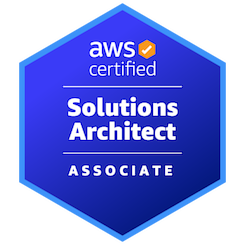
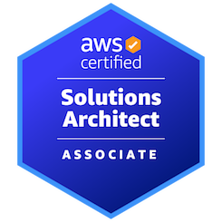
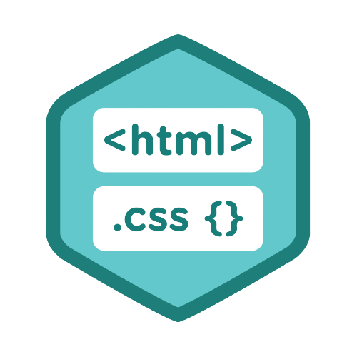
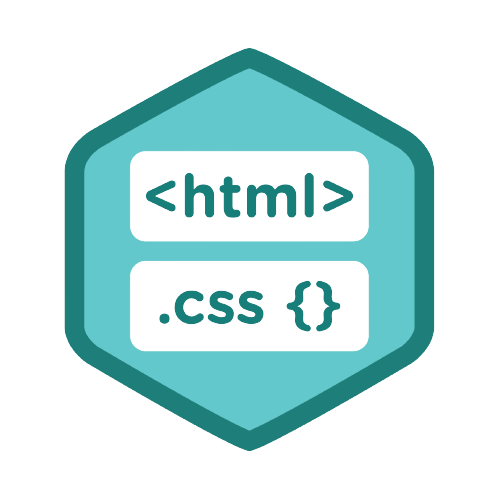

I'm AWS Certified Solution architect with 9+ years Experience in Teleco Cloud, Telecom, Cloud Computing, Windows, Troubleshooting and Client servicing.
Mobile +91-8744028686
Jamia Millia Islamia 2012-2016
Jamia Millia Islamia 2008-2011
Jamia Millia Islamia 2008
 

 

.png)
I am currently deputed at Nokia Network and Responsibility of Acceptance testing of new & redeployed Nokia Telco Cloud: CloudBand Infrastructure Software (CBIS) and CloudBand Application Manager (CBIS) as per LLD/HLD/DND.Perform testing of cloud configuration, health checkup of CBIS, CBAM and all ILOs and storage like CEPH and EMC. Monitor all logs from Zabbix. Experience in testing IMS nodes VNF & CNF deployed on cloud like CFX, MRF, SBC, NN, NTAS to check connectivity, configuration and Health check-up. Experience in Nokia container Services (NCS), Kubernetes and Dockers
Responsible Monitor applications and services hosted on cloud. Managing large scale Windows Linux environments Experience in understanding existing software workload. Perform 1st level of investigation for alerts using tools & logs Evaluating design alternatives including cost benefit analysis. Knowledge of monitoring tools like Aws Cloudwatch and Nagios.
Provide technial Support to Xfinity customer complaint on remote servics like Home Internet and Security like configuring router, Troubleshoot slow speed internet, Wireless security tools setup
Provide technical support to Hardware/Software related various Windows server, operating system platform and Troubleshoot Network issue
As member of a 24x7 roaster monitor alarm events of 8 circles- Bihar, MH, MP, Orissa, Gujrat, Kolkata and Mumbai on Citrix Bharti tools, Responsibility of monitoring alarm event of 3G(Mumbai,WB & Bihar) and LTE 4G for Pune.
Deployed Openstack on public cloud using Nested virtualization. Working on Zabbix Server deployment
Link-http://35.211.155.33/dashboard/
Username- testuser
Password- Javed123
Automate static own portfolio website deployment from Github to AWS S3 using AWS CodePipeline
Link-javedkhan.tech
Deployed nextcloud server to manage own private cloud storage service with multiple users which is alternate of Google and Microsoft.
Link- Deployment in progress, Link will be updated soon
Username-
Password-
I'm a tech enthusiast working to better understand the core concepts behind different popular Technological Fields like Cloud computing (Openstack and AWS), DevOps Tools, Telecom Network , Web Technologies, Networking, etc.
Currently, Learning Devops tools and Nokia technology like CBIS, CBAM, NCS, Git, GitHub, Chef, Kubernetes, Docker and etc.
Any doubts or suggestions regarding my website, please feel free to send message via mail by clicking on contact-me button below.
CONTACT ME